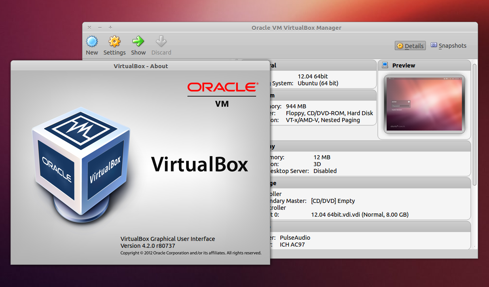

VİRTUALBOX NEDİR, İLK AYARLARI NELERDİR?

VirtualBox sanallaştırmaya yarayan yani sanal makine kurmaya yarayan bir programdır.
Yani bu program sayesinde bilgisayarınıza sanal başka bilgisayarlar kurabilir ve birden fazla bilgisayarınız varmış gibi işlemler yapabilirsiniz ,farklı işletim sistemleri kurabilir ve kullanabilirsiniz.
Örnek vermek gerekirse birçoğumuz WAMP, XAMPP gibi programları biliyor ve kullanıyordur. Ancak birçok developer biliyor ki bu programlar ile çalıştıkdan sonra asıl linux sunucunuza atmaya sıra geldiğinde muhtemelen çalışmayacaktır. Çünkü Windows ile Linux birbirinden çok farklıdır.
Mssql veritabanı ile çalışan bir kişi Windows ortamında Sqlsrv modülünü kullanmalıdır. Ancak Linux üzerinden sqlsrv modülü çalışmayacaktır. Linux’de pdo_dblib yada pdo_odbc kullanmalısınız. Muhtemelen 3-4 gününüz Windows’da geliştirdiğiniz kodları Linux sunucunuza uygunlaştırmak için uğraşacaksınız.
Virtualbox İlk Ayarları
“Aygıtlar” kısmına tıklandıktan sonra “Misafir Eklentileri CD Kalıbını Ekle” diyerek VirtualBox Guest eklentisi kurulur.
Aygıtlar -Paylaşılan pano- Çift yönlü kısmı işaretli olması gerekir.
Geri dön...